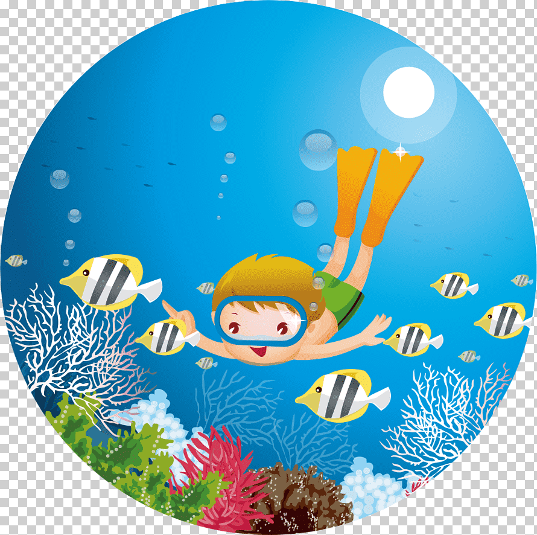
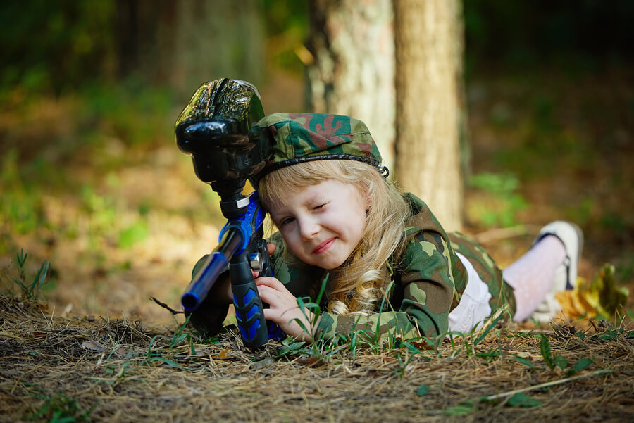

El buceo, tambien denominado submarinismo y escafandrismo es el acto por medio del cual el ser humano se sumerge en cuerpos de agua, ya se el mar, un lago, una cantera inundada o una piscina, con el fin de desarrollar una actividad profesional, recreativa, de investigación científica o militar con o sin ayuda de equipos especiales. Al buceo tradicional(sin aparatos de respiración) se le llama sencillamente buceo, aunque a su modalidad deportiva se le llama apnea o buceo libre. El termino submarinismo define con exactitud la práctica del buceo en el mar, que es además, y con creces, el buceo más practicado en todo el mundo. Al buceo practicado en cuevas o galerías inundadas de minas se le llama espeleobuceo y al buceo en lagos de montaña buceo de altura.
Para hacer buceo se necesitan ciertos equipos, entre los cuales están los siguientes:

El paintball o gotcha (en español"bola de pintura") es un juego de estrategia complejo en el que
los participantes usan pistolas de paintball, para disparar bolas de pintura contra los integrantes
del otro equipo.
Los jugaadores alcanzados por bolas de pintura son eliminados del mismo a veces en
forma transitoria y aveces en forma definitiva, dependiendo de la modalidad. Contrariamente a lo que
se piensa, es uno de los deportes de aire libre mas seguros.
Las marcadoras, las cuales son
accionadas por aire comprimido, CO2 u otros gases, en un comienzo se vendían en los catálogos
agricolas y tambien podían usarse para marcar árboles.
Normalmente en una partida de paintball se enfrentan dos equipos con el fin de eliminar
a todos los jugadores del bando rival o completar un objetivo (como capturar una bandera
o eliminar a un jugador concreto). Un juego de paintbull típico no profesional suele
durar de unos 5 minutos a media hora.
El equipo básico necesario para practicar
el paintball no es excesivamente caro (aunque si pueden serlo las marcadoras y demás
elementos de gama alta). El número de bolas de pintura disparadas durante una partida
varía según la modalidad de juego y de un jugador a otro: algunos disparan cientos,
otros unas pocas e incluso algunos no llegana a disparar en todo el juego.
